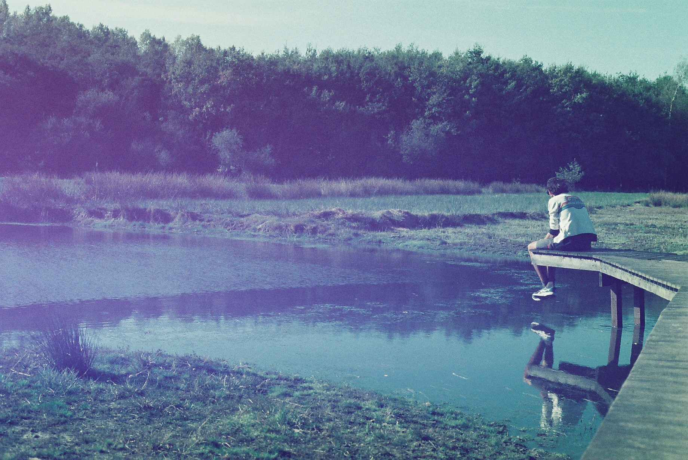

My name is Peter De Rijck and at this moment I am 0 seconds old.
In the picture on the right I'm pondering the significance of every second.
I created this website to tell you a little more about myself. I've been living in a small belgian town called Torhout for a little over a year. I have lived in several cities in Belgium, as well in some across the world during a two year span that I was working on farms and b&b's.
That last experience was together with my wife Emma we've been married over 4 years. We live together with our dog Rommie
Below you can see some of the projects I've been working on in the past weeks, as well as some info about my hobbies.

Projects
I am currently following the course of Full Stack Engineer on Codecademy, below are some examples of the small projects I've done in the previous weeks.
Hobbies - Running
I like running. In 2022 I will have run over 2000km. I run because it clears my head and I love being out and in nature. I listen to music, try to spot as many birds as possible and try to find a new road every time I'm out. Below are some of my long runs in the neighbourhood of Torhout.
Hobbies - Reading
I like to read, my favourites are dystopian novels, detective novels and russian novels. I try to get some reading in every day, it calms the mind.